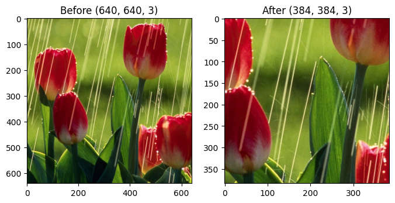
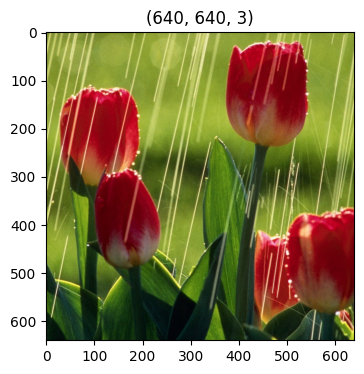
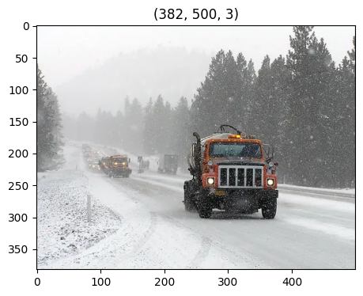
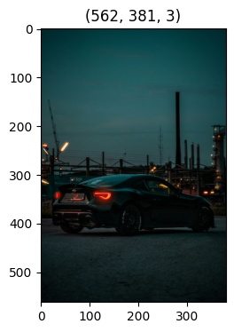
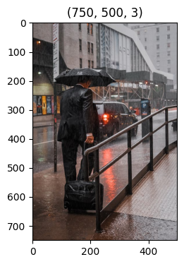
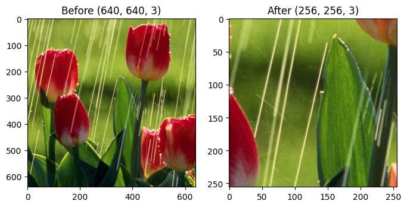
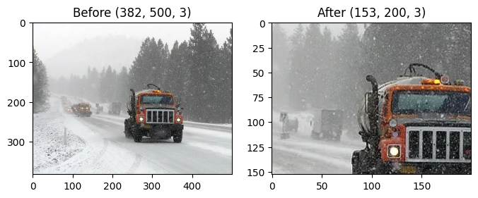
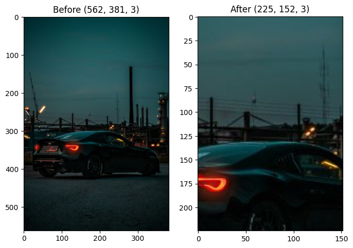
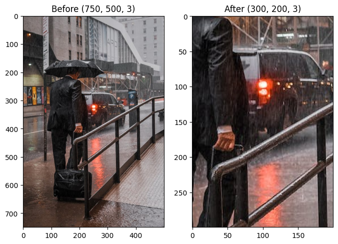

STRUCTURE
Set up
Use case 1: One Image
Use case 2: Batch of Images
A. SET UP
[1]:
#ADD NEURALDE MODULES TO PYTHON PATH
import sys
sys.path.append("..")
[2]:
#IMPORT NEURALDE TRANSFORMATION CLASS
from neural_de.transformations import CenteredZoom
[3]:
#IMPORT UTILITY CLASSES
import matplotlib.pyplot as plt
from pathlib import Path
import cv2
import os
[4]:
#SET IMAGE DATA DIR
ROOT_DIR = "../examples/images"
B. USE CASE 1: ONE IMAGE
[5]:
# PREPARE ABSOLUTE PATHS FOR IMAGES
image_path_list_0 = []
image_path_list_0.append(ROOT_DIR + "/tulip-under-rain.jpg")
print(image_path_list_0)
# READ AND SHOW IMAGES
image_list_0 = []
for image_path_str in image_path_list_0:
input_path = Path(image_path_str)
image = cv2.imread(str(input_path))
image = cv2.cvtColor(image, cv2.COLOR_BGR2RGB)
image_list_0.append(image)
plt.figure(figsize=(6,4))
plt.title(image.shape)
plt.imshow(image)
['../examples/images/tulip-under-rain.jpg']

[7]:
# SET ZOOM RATIO
TEST_RATIO_0 = 0.6
# INIT TRANSFORMER OBJECT
center_zoom_transformer_0 = CenteredZoom(keep_ratio=TEST_RATIO_0)
[11-21 11:39:02] {C:\Users\marc.lacourt\PycharmProjects\neuralde\examples\..\neural_de\utils\_twe_logger.py:123} INFO - Logger: name: neural_de_logger, handlers: [<StreamHandler stdout (DEBUG)>]
[8]:
# APPLY TRANSFORMATION TO INPUT IMAGE
transformed_images_0 = center_zoom_transformer_0.transform(image_list_0)
[9]:
# COMPARE IMAGES BEFORE AND AFTER TRANSFORMATION
for image_index_ in range(len(image_list_0)):
plt.figure(figsize=(8,6))
plt.subplot(1,2,1)
plt.title(f'''Before {image_list_0[image_index_].shape}''')
plt.imshow(image_list_0[image_index_])
plt.subplot(1,2,2)
plt.title(f'''After {transformed_images_0[image_index_].shape}''')
plt.imshow(transformed_images_0[image_index_])
plt.show()

C. USE CASE 2: BATCH OF IMAGES
[10]:
image_path_list_1 = []
image_path_list_1.append(ROOT_DIR + "/tulip-under-rain.jpg")
image_path_list_1.append(ROOT_DIR + "/test_snow.webp")
image_path_list_1.append(ROOT_DIR + "/test_brightness_car.jpg")
image_path_list_1.append(ROOT_DIR + "/street-rain-men.jpeg")
print(image_path_list_1)
image_list_1 = []
for image_path_str in image_path_list_1:
input_path = Path(image_path_str)
image = cv2.imread(str(input_path))
image = cv2.cvtColor(image, cv2.COLOR_BGR2RGB)
image_list_1.append(image)
plt.figure(figsize=(6,4))
plt.title(image.shape)
plt.imshow(image)
['../examples/images/tulip-under-rain.jpg', '../examples/images/test_snow.webp', '../examples/images/test_brightness_car.jpg', '../examples/images/street-rain-men.jpeg']




[11]:
# SET ZOOM RATIO
TEST_RATIO_1 = 0.4
# INIT TRANSFORMER OBJECT
center_zoom_transformer_1 = CenteredZoom(keep_ratio=TEST_RATIO_1)
[11-21 11:39:36] {C:\Users\marc.lacourt\PycharmProjects\neuralde\examples\..\neural_de\utils\_twe_logger.py:123} INFO - Logger: name: neural_de_logger, handlers: [<StreamHandler stdout (DEBUG)>]
[12]:
# APPLY TRANSFORMATION TO INPUT IMAGES
transformed_images_1 = center_zoom_transformer_1.transform(image_list_1)
[13]:
# COMPARE IMAGES BEFORE AND AFTER TRANSFORMATION
for image_index_ in range(len(image_list_1)):
plt.figure(figsize=(8,6))
plt.subplot(1,2,1)
plt.title(f'''Before {image_list_1[image_index_].shape}''')
plt.imshow(image_list_1[image_index_])
plt.subplot(1,2,2)
plt.title(f'''After {transformed_images_1[image_index_].shape}''')
plt.imshow(transformed_images_1[image_index_])
plt.show()




[ ]:
[ ]: